P33
简化问题分析
✅ 仍以方块移动到目标高度为例。
问题描述
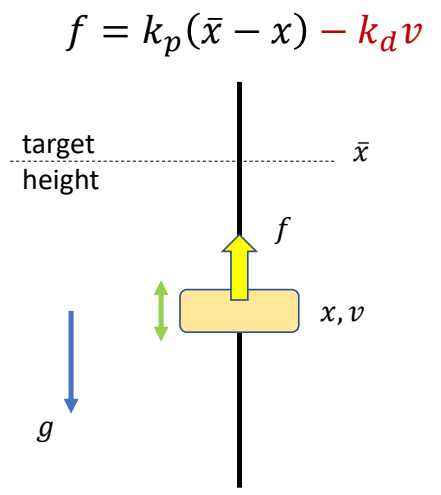
Compute a target trajectory \(\tilde{x} (t)\) such that the simulated trajectory \(x(t)\) is a sine curve.
目标函数
$$ \min_ {(x_n,v_n,\tilde {x} _n)} \sum _ {n=0}^{N} (\sin (t_n)-x_n)^2+\sum _ {n=0}^{N} \tilde {x}^2_n $$
✅ 目标函数：目标项＋正则项
约束
$$ \begin{align*} s.t. \quad & v _ {n+1}= v_ n+h (k _ p( \tilde {x} _n-x_n)-k _ dv_n) \\ & v _ {n+1} = x _ n + hv _ {n+1} \end{align*} $$
✅ 约束：半隐式积分的运动方程
P34
| Hard constraints: | 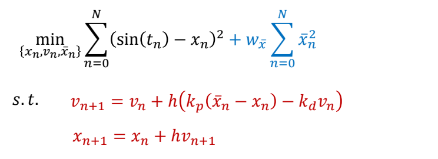 |
| Soft constraints: | 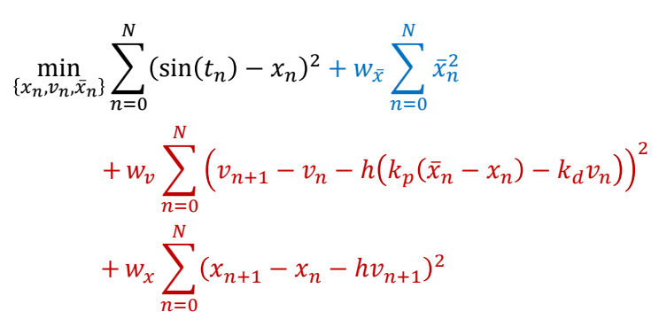 |
✅ 以两种方式体现约束：
✅（1）Hard：必须满足，难解，不稳定。
✅（2）Soft：尽可能满足，易求解。
P35
参数简化
Collocation methods:
Assume the optimization variables {\(x_n, v_n, \tilde{x}_n\)} are values of a set of parametric curves
- typically polynomials or splines
Optimize the parameters of the curves \(\theta\) instead
- with smaller number of variables than the original problem
✅ 要优化的参数量太大，难以优化。
✅ 解决方法：假设参数符合特定的曲线，只学习曲线的参数，再生成完整的参数。
P37
优化方法
How to solve this optimization problem?
Gradient-based approaches:
- Gradient descent
- Newton’s methods
- Quasi-Newton methods
- ……
P39
Trajectory Optimization for Tracking Control
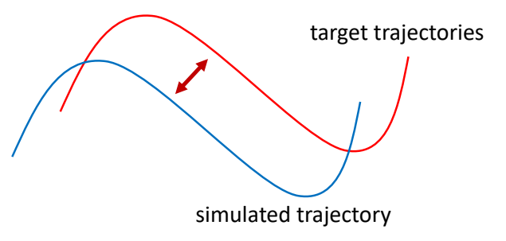
find a target trajectory
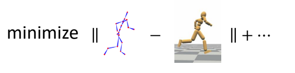
✅ 把动捕结果当成初始解，然后以优化的方式找到合理轨迹。
P40
Problem with Gradient-Based Methods
- The optimization problem is usually highly nonlinear, gradients are unreliable
- The system is a black box with unknow dynamics, gradients are not available
解决方法： Derivative-Free Optimization
-
Iterative methods
- Goal: find the variables 𝒙 that optimize \(f(x)\)
- Determining an initial guess of \(x\)
- Repeat:
- Propose a set of candidate variables {\(x_i\)} according to \(x\)
- Evaluate the objective function \(f_i=f(x_i)\)
- Update the estimation for \(x\)
-
Examples:
- Bayesian optimization, Evolution strategies (e.g. CMA-ES), Stochastic optimization, Sequential Monte Carlo methods, ……
✅ 启发式方法或随机采样方法，不需要梯度。
✅ 缺点：慢、不精确。
P43
CMA-ES
- Covariance matrix adaptation evolution strategy (CMA-ES)
- A widely adopted derivative-free method in character animation
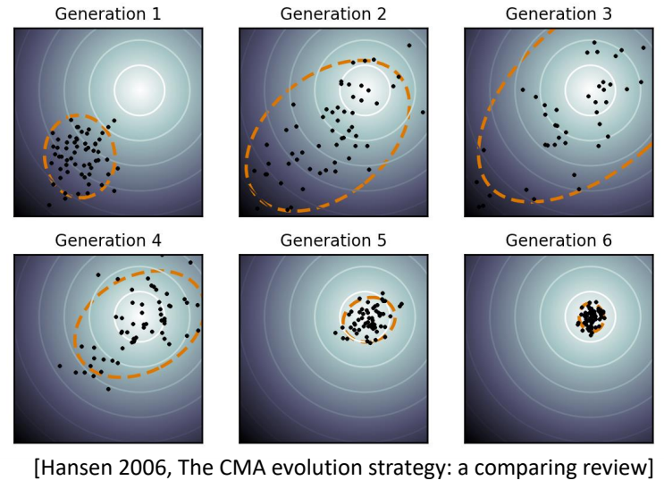
Goal: find the variables 𝒙 that optimize \(f(x)\)
- Initialize Gaussian distribution \(x\sim \mathcal{N} (\mu ,\Sigma )\)
- Repeat:
- sample candidate variables {\(x_i\)} \( \sim \mathcal{N} (\mu ,\Sigma )\)
- Evaluate the objective function \(f_i=f(x_i)\)
- Involve simulation and generate simulation trajectories
- Sort {\(f_i\)} and keep the top \(N\) elite samples
- Update \(\mu ,\Sigma \) according to the elite samples
✅ 优点：稳定，无梯度，可用于黑盒系统。
P44
🔎 [Wampler and Popović 2009 - Optimal Gait and Form for Animal Locomotion]
P45
✅ [Al Borno et al. 2013 - Trajectory Optimization for Full-Body Movements with Complex Contacts]
✅ 只优化目标轨迹，不优化仿真轨迹。因为仿真轨迹可以通仿真得到。
P46
SAMCON
✅ CMA-ES 的缺点：
（1）每次都从头到尾做仿真，计算量大。
（2）如果仿真轨迹长，则难收敛。
✅ 改进方法：每次采样，只考虑下面一帧。
🔎 SAmpling-based Motion CONtrol [Liu et al. 2010, 2015]
- Motion Clip → Open-loop control trajectory
- A sequential Monte-Carlo method
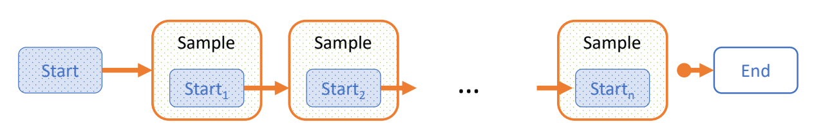
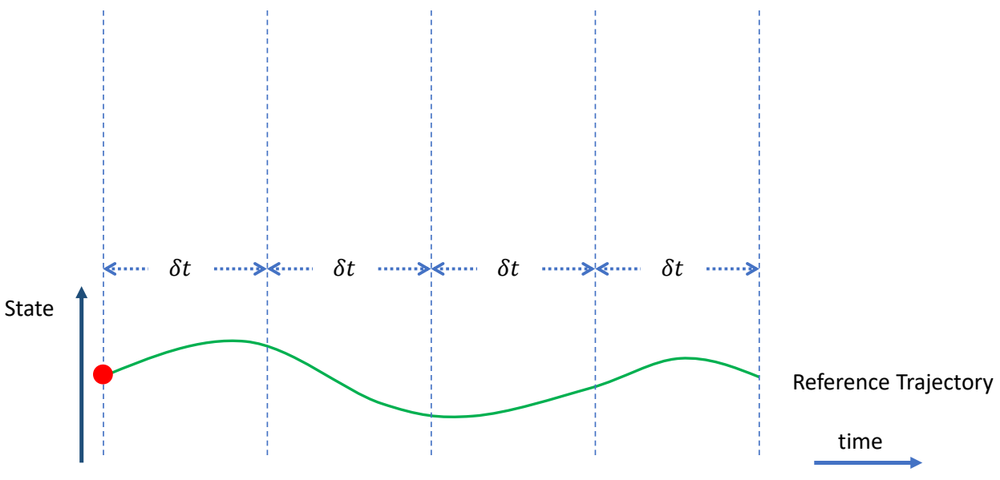 | ✅ 把轨迹分割开，每次优化一小段。 |
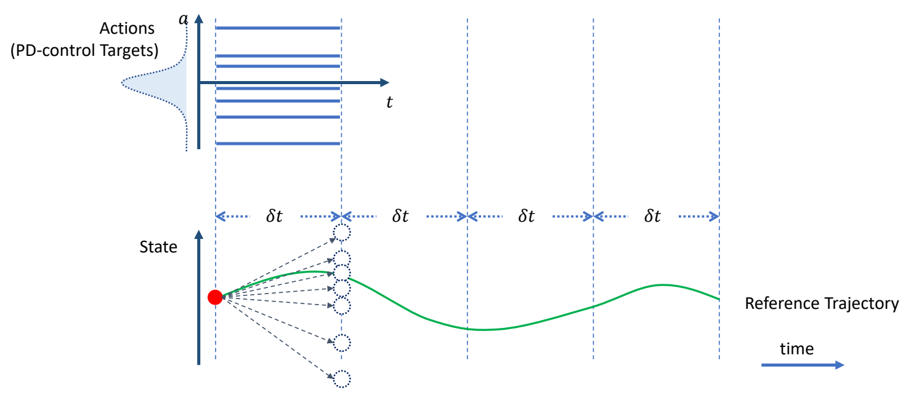 | ✅ 在目标轨迹上增加偏移，跟踪偏移之后的轨迹。 ✅ 偏移量未知，因此以高斯分布对偏移量采样。 ✅ 高斯分布可由其它分布代替。 |
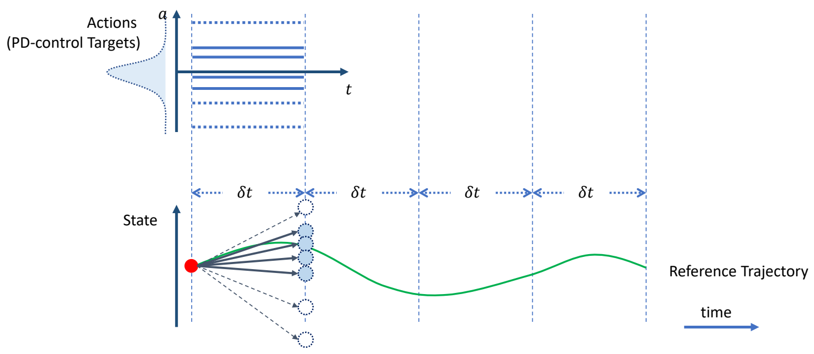 | ✅ 对每个偏移量做一次仿真，生成新的状态，保留其中与当目标接近的 N 个。 |
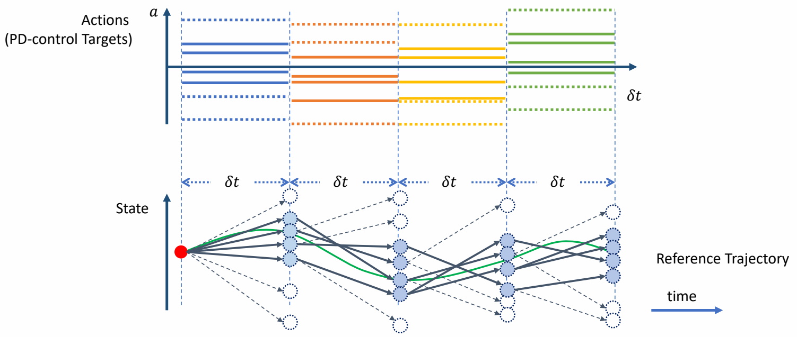 | ✅ 从上一步 N 个中随机选择出发点，以及随机的偏移量，再做仿真与筛选。 |
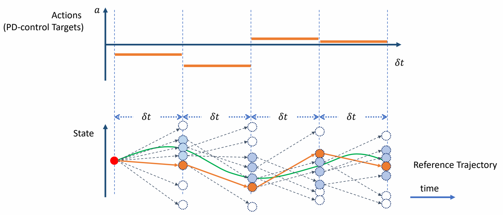 | ✅ 最终找到一组最接近的。 ✅ 原理：只选一个容易掉入局部最优，因此保留多个。 ✅ 蒙特卡罗＋动态规划 |
✅ 优点：穿膜问题也能被修正掉，可还原动捕数据，可根据环境影响而自动调整。
P54
Feedforward & Feedback Control
Feedforward Control
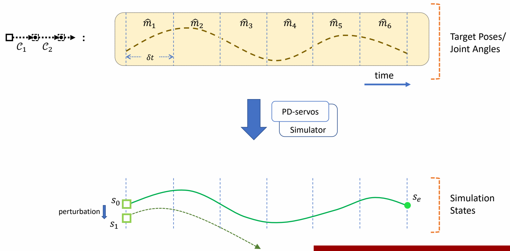
✅ 前馈控制，要求每一步的起始状态都是在获取轨迹过程中能得到的状态。
✅ 如果对起始状态加一点挠动，状态会偏离很远。
P56
Feedback Control
✅ 解决方法：引入反馈策略。根据当前偏差，自动计算出更正，把更正叠加到控制轨迹上。
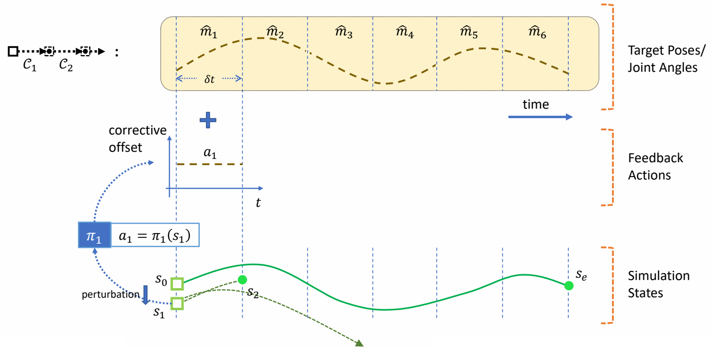 |
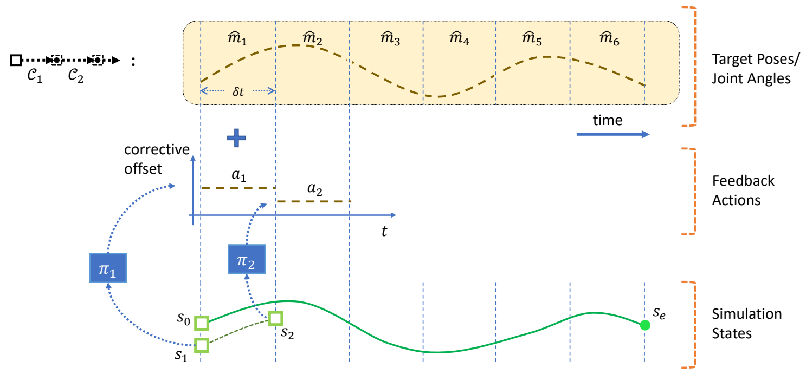 |
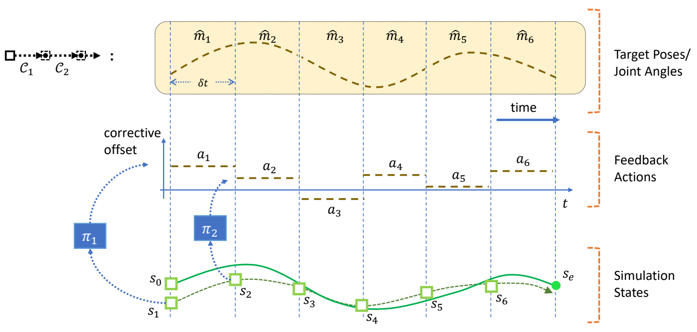 |